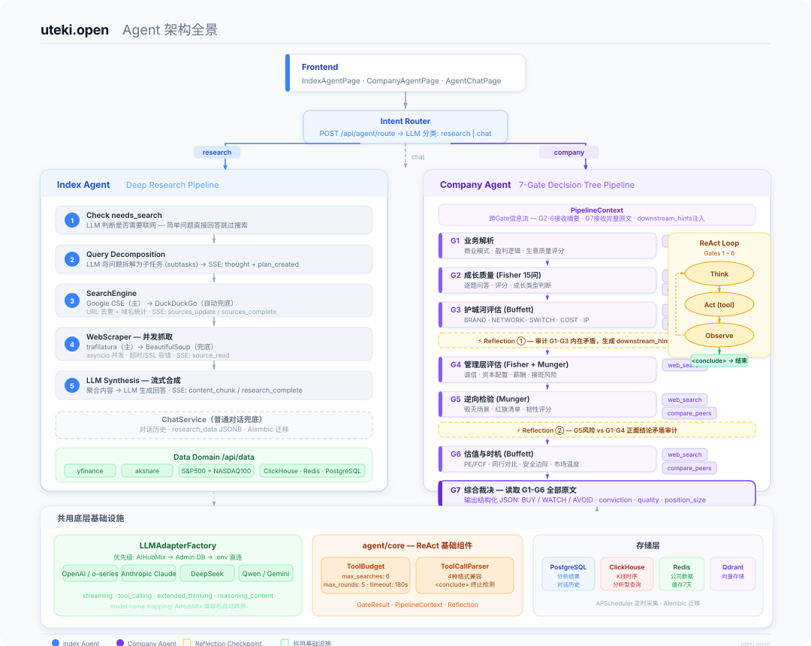
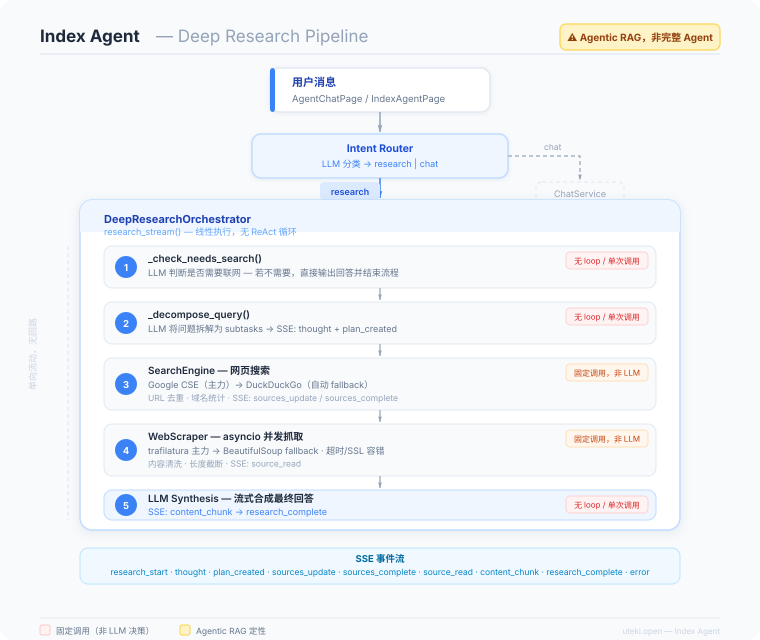
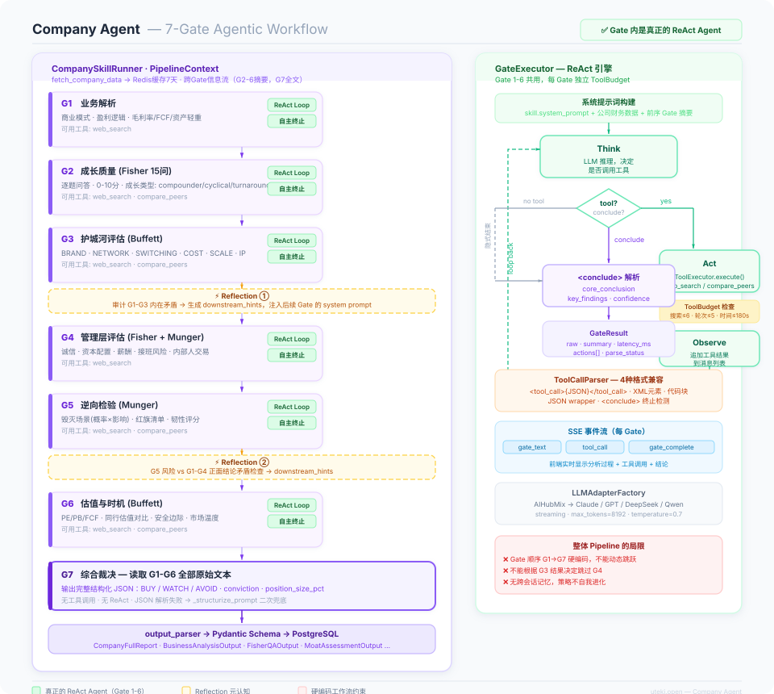

市面上大多数 AI 投资工具本质是 Prompt + LLM 的单次调用。 uteki.open 的差异化在于对 Agentic 架构的深度工程实践。
本项目的核心贡献是：将结构化的价值投资分析框架与 Agentic AI 的自主推理能力深度融合。 每个分析节点（Gate）都是一个独立的 ReAct Agent，能够自主决定何时搜索外部信息、 何时对比同行数据、何时得出结论；多个 Gate 之间通过 PipelineContext 实现信息累积， 并在关键节点引入 Reflection 机制进行跨步骤一致性校验——这是对 Reflexion 论文思路在 多步骤生产流水线中的扩展应用。
每个分析 Gate 内独立运行 Think→Act→Observe 循环，LLM 自主决策工具调用时机与终止条件，而非固定步骤。
Gate 3/5 后触发独立的矛盾审计 LLM，检查前序分析的内在一致性并将提示注入后续 Gate——单步 Reflexion 的多步扩展。
CompanySkillRunner 作为编排层，GateExecutor 作为工人层，严格遵循 Anthropic《Building Effective Agents》中的最佳实践。
每个 Gate 独立的 ToolBudget（搜索≤6次 / 轮次≤5 / 超时≤180s），解决生产环境中 ReAct 无限循环的工程难题。
统一 LLMAdapterFactory 支持 7+ 模型提供商，三级优先级路由（AIHubMix → Admin DB → .env），单一接口屏蔽所有差异。
G7 综合裁决输出完整 Pydantic Schema，包含 BUY/WATCH/AVOID、conviction、position_size_pct 等 50+ 字段，双重解析兜底。
我们对两个子系统进行了严格的 Agent 属性评估， 清楚地区分"真正的 ReAct Agent"与"Agentic Workflow"的边界—— 这种自我评估能力本身体现了工程成熟度。
整体定性：Gate 内是真正的 ReAct Agent，Gate 间编排是结构化 Agentic Workflow。 这是刻意的工程取舍——用结构化管控分析质量与可预测性，用 ReAct 在每个分析节点保留自主灵活性。 遵循 Anthropic 所述："use workflows for predictable, agents for unpredictable"。
三张架构图从不同粒度展示系统设计。



项目的核心设计均有明确的学术或工业权威来源， 在此基础上针对金融投资场景进行了工程化扩展与优化。
Yao et al. · Google Brain / Princeton · ICLR 2023
提出 Think-Action-Observation 交替循环架构，使 LLM 能够在推理过程中动态调用外部工具。uteki.open 的 GateExecutor 直接实现了此模式。
Shinn et al. · Northeastern / MIT · NeurIPS 2023
Agent 通过语言反思（verbal reflection）而非梯度更新改进输出，将反思文本存入 episodic memory 影响后续决策。本项目将单步 Reflexion 扩展为跨 Gate 的多步一致性审计。
Anthropic Engineering · 2024
系统化定义了 Prompt Chaining、Routing、Parallelization、Orchestrator-Workers、Evaluator-Optimizer 五大 Agentic 模式，并明确指出生产环境中需要 budget 控制与 monitoring。
Andrew Ng · DeepLearning.AI · 2024
定义了 Agentic AI 的四大设计模式：Reflection、Tool Use、Planning、Multi-Agent Collaboration，并指出结合这些模式的系统将显著超越单次 LLM 调用。
Du et al. · MIT · ICML 2023
多个 LLM 从不同角度分析同一问题并相互批判，显著降低幻觉率并提升事实准确性。本项目以"7个专业视角串行分析 + G7 综合裁决"实现类似的多视角校验。
以下三点是超出原始论文范畴、针对金融投资场景生产化所做的工程贡献。
原始 ReAct 论文未解决无限循环问题。本项目设计了精确的资源限制器：
每 Gate 独立的 max_searches=6 / max_rounds=5 / timeout=180s，
预算耗尽时向 LLM 发送强制终止提示，而非直接中断——保留了输出的完整性。
Reflexion 论文中 Agent 反思自身在同一任务中的输出。
本项目将其扩展为：在固定 Checkpoint（Gate 3/5 后）由独立 LLM 审计
多个不同 Gate 之间的结论一致性，
并将 downstream_hints 动态注入后续 Gate 的 system prompt——
这是 Reflexion 思路在多步 Pipeline 中的首个工程落地形式之一。
将 Buffett（护城河/估值）、Fisher（成长质量/管理层）、Munger（逆向检验/多元心智模型） 三大框架转化为 7 个独立的专业 Agent，每个 Agent 有明确的分析维度、评分标准和工具权限。 这是"投资领域知识"与"Agentic AI"的系统性融合，而非简单的 Prompt 拼接。
从 LLM 接入到数据存储，全栈自研，无框架依赖。
| 层次 | 技术选型 | 用途 |
|---|---|---|
| 后端框架 | FastAPI + Uvicorn | 异步 API / SSE 流式 |
| LLM 接入 | 自研 LLMAdapterFactory | 7+ 模型统一接口 |
| Agent 核心 | 自研 ReAct Engine | 无框架依赖 |
| 主数据库 | PostgreSQL + Alembic | 分析结果 / 对话历史 |
| 时序数据 | ClickHouse | K 线 / 行情数据 |
| 缓存 | Redis | 公司数据 7 天缓存 |
| 向量库 | Qdrant | 语义检索 |
| 对象存储 | MinIO | 文件 / 报告 |
| 前端 | React 18 + TypeScript | Dark theme UI |
| 移动端 | Flutter | iOS / Android |
Docker Compose 启动全部 5 个数据库，poetry install + pnpm dev，5 分钟内可运行。
Admin 页面配置 API Key，支持 OpenAI / Claude / DeepSeek / Qwen / Gemini / Doubao，无需修改代码。
前端实时可见每个 Gate 的推理过程、工具调用、Reflection 结果，体验 Agent 真实工作过程。